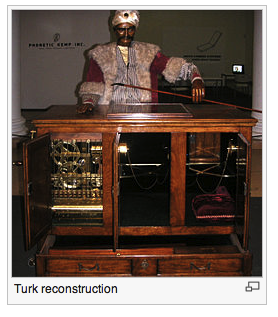

Intro
This is a short course about robotics, designed to have in about 10 sessions an outcome of team members building robots and experimenting with different setups.
Content
- 1. Team Building - Activity
- 2. Robotics - Intro
- 3. Mechanics Fundamentas
- 4. Electronics Fundamentals
- 5. Maze Solving - Activity
- 6. Software Fundamentals
- 7. Sensors
- 8. Telecommunication
- 9. Analog signals
- 10. Chain Reaction - Activity
0 - Instructions for the instructions
This automatic page generator is the easiest way to create beautiful pages for all of your projects. Author your page content here using GitHub Flavored Markdown, select a template crafted by a designer, and publish. After your page is generated, you can check out the new gh-pages branch locally. If you’re using GitHub Desktop, simply sync your repository and you’ll see the new branch.
1. Team Building - Activity
Watch the video https://www.youtube.com/watch?v=1p5sBzMtB3Q Team up e’ve crafted some handsome templates for you to use. Go ahead and click 'Continue to layouts' to browse through them. You can easily go back to edit your page before publishing. After publishing your page, you can revisit the page generator and switch to another theme. Your Page content will be preserved.
- 1 - how many people did he test?
- 2 - where did he tested it?
- 3 - where were the best engineers?
- 4 - who had the worst performance?
- 5 - how do kindergarten kids perform?
- 6 - why? where does that leave us a team?
There is a complementary video with graphs of why is this happening.
Detailed instructions are hosted here: marshmallowchallenge.com/instructions. You will need them if you are an instructor and this is the first time you run it.
2. Robotics - Intro
 The word robot comes from a theatre play that showed some humanoid machines. According to (LieZi) in the 10th century B.C. Yan Shi made an humanoid that could move like we do. According to the roman legends, the God Vulcan created mechanical machines that could talk. The greek has stories about Talos, that was built with bronze to protect their city. It is one of the best well known tradition that the jewish has a mythological automaton called “Golem”.
There is something that inspire humans and keeps us dreaming about animated creatures that will do our work and help us to explore other worlds. We have all been exposed to different movies and “crazy” ideas about what robots are going to do.
But the future is here and now. Somewhere in the year 1770 there are several documents about the first robot that could play chess. It resembles a huge calculator with a manequen on top, but it is not so important how clumsy was it or how other fantasy stories have been told about automaton. The key point to remember is that in 1996 the Chess World Champion Kasparov barely won to the computer artificial intelligence Deep Blue. The designers at IBM updated the self-learning machine and in 1997 the world saw the first time a machine that could do something better than the best of us.
// this is a test of blink code
// the setup function runs once when you press reset or power the board
void setup() {
// initialize digital pin 13 as an output.
pinMode(13, OUTPUT);
}
// the loop function runs over and over again forever
void loop() {
digitalWrite(13, HIGH); // turn the LED on (HIGH is the voltage level)
delay(1000); // wait for a second
digitalWrite(13, LOW); // turn the LED off by making the voltage LOW
delay(1000); // wait for a second
}
Authors and Contributors
You can find Rudi both on twitter and Github as @todocono . Back in 2012, Julian da Silva @miniBloq served as an inspiration for this course. Feel free to open an issue or start a wiki for it and to shoot for a Pull Request if you want to improve the code or the content.